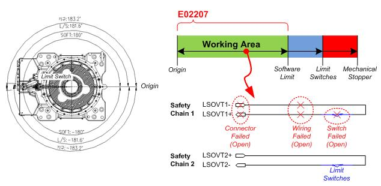

Previous error code: E0002 Hardware limit switch in operation
1.1.29.1. Outline
Even though the robot does not deviate from the hardware limit area, it is inputted that the limit switch installed at the end of the operation area of each of the axes of the robot is in operation. However, checking is required as there is a difference between the input states of safety chain 1 and safety chain 2.
1.1.29.2. Causes and examine methods
|
This is an abnormal situation in which the hardware limit switch operation is detected even if the software limit is not exceeded.
Check as there is a problem with the switch or the wiring system. |

Figure 1.126 E02207 Main body limit switch input mismatch (safety chain 1 off)
This is an abnormal situation in which the hardware limit switch operation is detected even if the software limit is not exceeded. The problem occurred due to the opening of safety chain 1. Check the related switches or wiring systems.
n Fault with the hardware limit switch: Opened due to some reasons such as damage to the switch.
n Wiring: Defective contact due to the disconnection of or damage to the wiring.
n Connector: Disconnection due to defective contact following the connector being loosened or damaged.
For more details about checking, refer to “Hardware Limit Switch Checking Methods.”